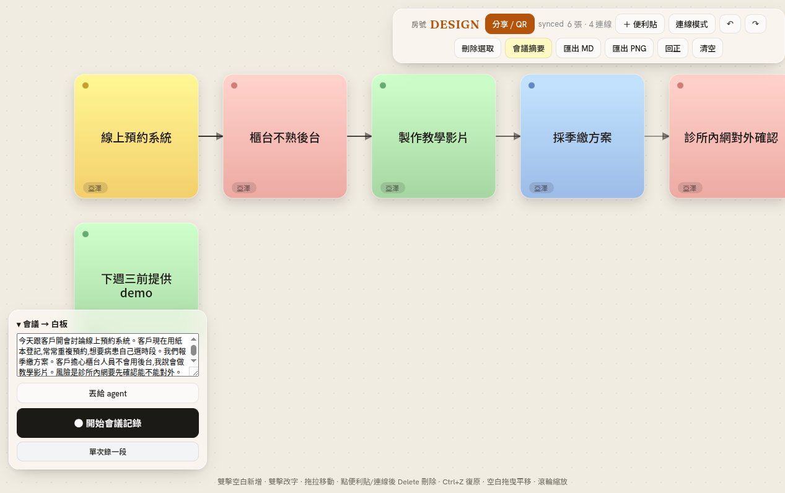

兩段式 AI:先清稿(收贅字、修錯字、重斷句),再畫卡。STT 原文的「嗯、那個、對對對」不會被抄上板。
會議、組織、流程、架構、心智圖、看板、SWOT、時間軸、魚骨、甘特;每次排版有碰撞防護,卡片與圖框保證不互疊。
其他人只要瀏覽器,重活全在主機。變動即時同步,看得到彼此的游標,也看得到 Mori 一張張畫。
「幫我排一下」「把這張交給小明」「只看 #行銷」直接執行 —— 靠 LLM 理解,不是關鍵字比對。
白板紀錄 HTML(AI 摘要+全程逐字稿)、Markdown、PNG;畫板檔(.json)可完整還原、傳給別人接著編。
後端 Rust 一顆 binary,零授權成本。設定頁可填自己的 OpenAI 相容 base / key / model,用自己的額度。
實際流程:貼上逐字稿讓 AI 長出白板,再把成果匯出成可閱讀、可分享的檔案。
把現成逐字稿丟給 agent,AI 自動整理成卡片、連線與圖框。
把圖表摘要與全程逐字稿打包成一個可離線閱讀的 HTML 檔。
把目前白板輸出成圖片,適合貼到簡報、文件或聊天室。